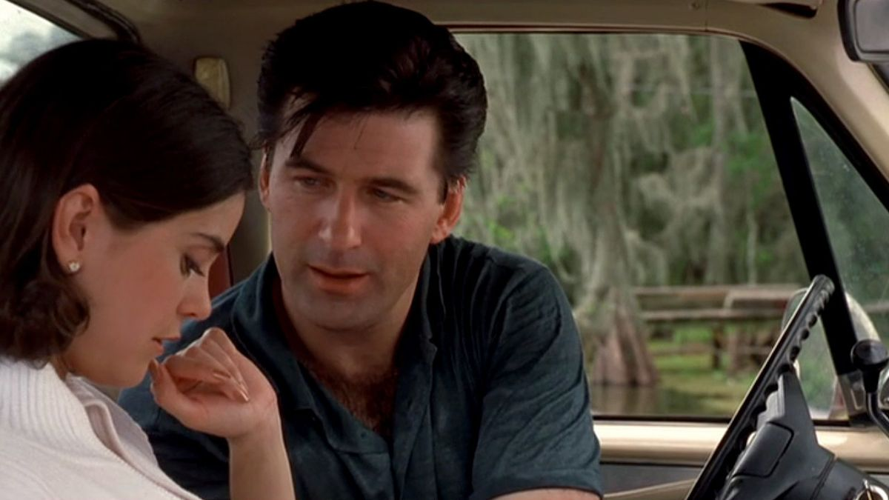
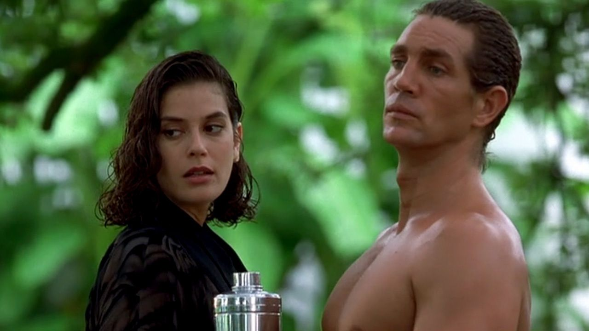
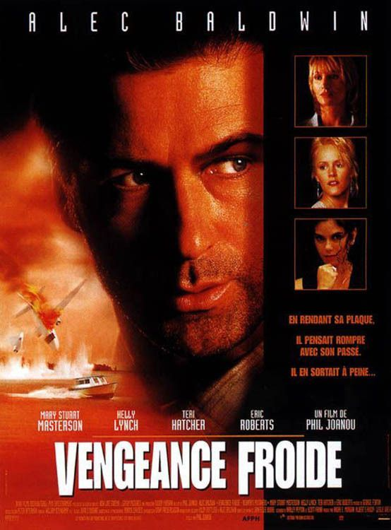

J'avais onze ans.
Je connaissais déjà Alec Baldwin — celui de Guet-Apens, le braqueur élégant en fuite dans le désert américain.
Et je connaissais Teri Hatcher — Lois Lane dans Lois et Clark, les nouvelles aventures de Superman. Une présence que la télévision avait installée dans mon salon depuis des années.
Quand j'ai mis cette cassette, je pensais retrouver des visages familiers dans un thriller ordinaire.
Ce que j'ai trouvé, c'est autre chose.
Une chaleur épaisse. Un bayou qui respire. Une Louisiane nocturne qui colle à la peau. Et un Alec Baldwin différent — plus lourd, plus abîmé, plus réel que tout ce que j'avais vu de lui avant.
Et puis Eric Roberts.
Ce soir, on descend dans le bayou.

Alec Baldwin — Vengeance Froide (Heaven's Prisoners), 1996
Vengeance Froide.
1996. Réalisé par Phil Joanou. Avec Alec Baldwin, Kelly Lynch, Mary Stuart Masterson et Eric Roberts.
Adapté du roman de James Lee Burke — le premier volet de la série Dave Robicheaux, polar louisianais qui mêle enquête criminelle, trauma de guerre et alcoolisme. Une série littéraire culte aux États-Unis, quasi inconnue en France à l'époque.
Un film sorti en salles avec une distribution correcte, reçu froidement par la critique, disparu rapidement des cinémas.
Ce qu'on trouve à l'intérieur mérite infiniment mieux que ce sort.
Un néo-noir atmosphérique, ancré dans une Louisiane poisseuse et magnifique, porté par un Baldwin qu'on n'avait jamais vu aussi vulnérable — et un Eric Roberts qui vole chaque scène où il apparaît.
1996.
James Lee Burke est l'un des romanciers américains les plus respectés de sa génération. Ses romans mettent en scène Dave Robicheaux — ancien flic de la Nouvelle-Orléans, vétéran du Vietnam, alcoolique en rémission, retraité dans le bayou d'Iberia Parish. Des livres denses, atmosphériques, qui font de la Louisiane un personnage à part entière.
Hollywood s'y intéresse depuis des années. Vengeance Froide est la première tentative sérieuse d'adaptation.
Phil Joanou prend les commandes. Un réalisateur discret — State of Grace avec Sean Penn en 1990, quelques clips pour U2. Pas un auteur au sens strict, mais quelqu'un qui sait créer une atmosphère et diriger des acteurs.
Alec Baldwin est Dave Robicheaux. C'est un choix audacieux — Baldwin en 1996 cherche encore sa place dans le paysage hollywoodien. Ni star d'action pure ni acteur de composition au sens classique. Robicheaux lui offre quelque chose de rare — un personnage complexe, brisé, humain dans ses contradictions.
Et Eric Roberts campe le villain avec une intensité froide et fascinante. Roberts est l'un des acteurs les plus sous-estimés de sa génération — une carrière fragmentée, des choix erratiques, mais une présence magnétique que peu de ses contemporains possédaient.
La Louisiane comme décor. Le bayou comme état d'âme.
C'est exactement ce que le roman demandait.

Vengeance Froide — Louisiane, 1996
Dave Robicheaux est un ancien flic.
Retraité dans le bayou louisianais avec sa femme Annie, il tient un magasin d'appâts et essaie de rester sobre. Une vie simple, fragile, construite sur la volonté de ne pas replonger — ni dans l'alcool, ni dans la violence.
Puis un avion s'écrase dans le bayou devant lui.
Il sauve une petite fille. Seule survivante. Et en cherchant à comprendre qui elle est et d'où elle vient, il tire un fil qui remonte jusqu'aux trafiquants de drogue qui contrôlent la région.
Ce qui devait rester à distance s'invite chez lui.
Le film ne se précipite pas. Il prend le temps d'installer son atmosphère — la moiteur du bayou, la lumière dorée et lourde de la Louisiane, la tension sourde d'une communauté qui vit avec ses secrets. Dave Robicheaux n'est pas un héros qui cherche l'action. C'est un homme qui voulait la paix et qui ne peut pas s'empêcher de faire ce qui est juste.
Et Eric Roberts — en trafiquant local aussi séduisant que dangereux — incarne exactement le type de menace que ce décor demandait.
Ce film aurait pu être un polar ordinaire.
Il ne l'est pas.
Ce qui le distingue c'est son refus de l'efficacité narrative au sens hollywoodien. Vengeance Froide ne cherche pas à enchaîner les rebondissements. Il cherche à installer un état — celui d'un homme qui a trouvé la paix et qui sent qu'elle lui échappe à nouveau, lentement, inexorablement.
Baldwin porte ça avec une sobriété qu'on ne lui connaissait pas. Pas le Baldwin élégant et maîtrisé de Guet-Apens. Quelqu'un de plus lourd, de plus fatigué, de plus proche de la défaillance. Dave Robicheaux est un homme qui se bat contre lui-même autant que contre ses ennemis. Cette intériorité — rare dans le genre — transforme chaque scène en quelque chose de plus chargé.
Et la Louisiane elle-même est une performance.
Phil Joanou filme le bayou comme peu de cinéastes américains ont osé le faire — pas comme un décor pittoresque, mais comme un organisme vivant, oppressant, qui pèse sur chaque personnage. La chaleur se ressent à l'écran. La moiteur aussi. C'est un cinéma physique, sensoriel, qui fait du territoire une métaphore de l'état intérieur du protagoniste.
Eric Roberts complète le tableau. Son villain n'est pas un méchant de cinéma standard — il a du charme, de l'humour, une présence qui rend la menace d'autant plus réelle qu'elle ne se cache pas derrière une caricature.
Vengeance Froide est un film lent. C'est sa force. Et c'est exactement ce qui a tué son box-office.

Vengeance Froide — affiche française, 1996
Vengeance Froide n'avait pas le profil commercial de son époque.
1996 c'est l'année où le thriller américain cherche la vitesse, le twist, l'efficacité narrative. Seven vient de redéfinir le genre un an plus tôt. Le public attend de la tension construite sur le rythme, pas sur l'atmosphère. Vengeance Froide arrive avec exactement l'inverse — un film lent, contemplatif, qui prend son temps pour installer ses personnages et son décor.
La critique n'a pas su quoi en faire. Trop lent pour un thriller, trop violent pour un drame. Le même angle mort que beaucoup de films de cette programmation — un objet qui ne rentre dans aucune case préétablie.
Baldwin en 1996 n'était plus une garantie commerciale. Et James Lee Burke — dont l'œuvre aurait dû porter le film — était inconnu du public français.
La Louisiane comme décor n'aidait pas non plus. Exotique pour un marché qui préférait les thrillers urbains de New York ou Los Angeles. Trop particulière, trop ancrée dans une réalité géographique et culturelle que le public européen ne reconnaissait pas immédiatement.
Le film sort. Déçoit. Passe en VHS.
Et là — comme toujours — il trouve les quelques personnes qui savaient regarder ailleurs.
Un gamin de onze ans avec une cassette dans l'armoire de son grand-père. C'était suffisant.
Parce que la lenteur est une qualité.
En 2026, le cinéma de genre a presque entièrement abandonné l'atmosphère au profit de l'efficacité. Les thrillers sont devenus des machines à rebondissements — calibrés, testés, optimisés pour maintenir l'attention d'un spectateur qui n'a plus l'habitude d'attendre.
Vengeance Froide fait exactement le contraire. Il demande de la patience. Il installe avant d'agir. Il construit une relation avec son décor avant de construire son intrigue.
Et pour ceux qui acceptent ce contrat — c'est une expérience rare.
Baldwin y est meilleur qu'il ne l'a jamais été dans ce registre. Dave Robicheaux est peut-être son personnage le plus humain, le plus vulnérable, le plus éloigné de l'image qu'Hollywood avait construite autour de lui.
Eric Roberts mérite d'être réévalué — pas seulement dans ce film, mais dans l'ensemble de sa carrière fragmentée et sous-estimée. Vengeance Froide est l'un de ses meilleurs rôles.
Et la Louisiane de 1996 — cette chaleur, cette lumière, ce bayou — n'existe plus au cinéma. C'est un document autant qu'un film.
J'avais onze ans. Je ne savais pas encore que j'aimais les films lents.
Ce film m'a appris que j'en étais capable.
Vengeance Froide n'est pas un film facile.
Il ne cherche pas à l'être.
Il cherche à vous emmener quelque part — dans cette chaleur, dans ce bayou, dans la tête d'un homme qui voulait juste vivre en paix et qui n'y arrive pas.
J'avais onze ans. Je connaissais Baldwin de Guet-Apens, Teri Hatcher de Lois et Clark. Je pensais savoir ce que j'allais voir.
Je ne savais pas.
Ce film m'a appris quelque chose que peu de thrillers de l'époque m'ont appris — que la tension n'a pas besoin de vitesse pour exister. Qu'une atmosphère peut être aussi oppressante qu'une course-poursuite. Que la Louisiane peut être aussi dangereuse que n'importe quelle ville américaine.
La saison 2 de SOMEDAY commence ici.
Dans le bayou. Dans la chaleur. Dans la moiteur d'un film que personne n'a assez vu.
La cassette est dans le lecteur. On rembobine.
Titre original
Vengeance Froide
Pays
États-Unis
Genre
Néo-noir / Thriller
Durée
132 min
Source
Roman de James Lee Burke
Avec aussi
Kelly Lynch · Mary Stuart Masterson · Teri Hatcher
Fil conducteur
Pilote Saison 2
Écho
Guet-Apens (S1) — Alec Baldwin
Regarder l'épisode
SOMEDAY — S2 EP. 01